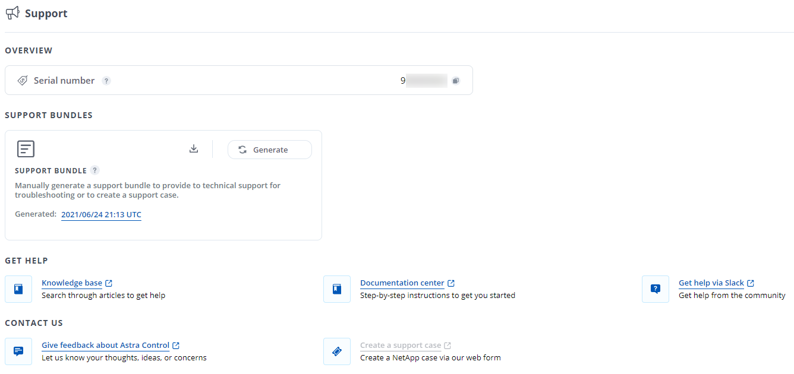
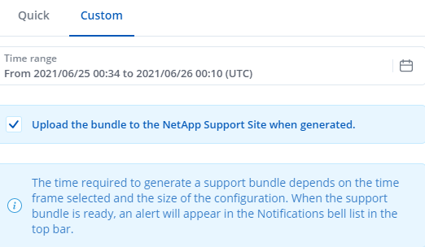
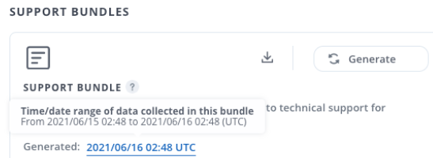

도움을 받으십시오
기여자
NetApp은 다양한 방법으로 Astra Control을 지원합니다. 기술 자료(KB) 기사 및 Slack 채널과 같은 광범위한 무료 셀프 지원 옵션을 24x7 이용할 수 있습니다. Astra Control 계정에는 웹 발권 서비스를 통한 원격 기술 지원이 포함되어 있습니다.

|
Astra Control Center에 대한 평가판 라이센스가 있는 경우 기술 지원을 받을 수 있습니다. 그러나 NSS(NetApp Support Site)를 통한 케이스 생성은 사용할 수 없습니다. 피드백 옵션을 통해 지원 팀에 문의하거나 Slack 채널을 사용하여 셀프 서비스를 받을 수 있습니다. |
먼저 해야 합니다 "NetApp 일련 번호에 대한 지원을 활성화합니다" 이러한 비 셀프 서비스 지원 옵션을 사용하려면 NetApp NSS(Support Site) SSO 계정은 케이스 관리와 함께 채팅 및 웹 티켓팅에 필요합니다.
기본 메뉴에서 * 지원 * 탭을 선택하면 Astra Control Center UI에서 지원 옵션에 액세스할 수 있습니다.

자체 지원 옵션
이러한 옵션은 24x7 무료로 제공됩니다.
-
Astra Control과 관련된 문서, FAQ 또는 고장 수리 정보를 검색합니다.
-
문서화
현재 보고 있는 문서 사이트입니다.
-
Pub 작업 공간의 컨테이너 채널로 이동하여 동료 및 전문가와 교류하십시오.
-
문제 해결을 위해 NetApp 지원에 제공할 지원 번들을 생성합니다
-
피드백 이메일
귀하의 생각, 아이디어 또는 우려 사항을 당사에 알릴 수 있도록 astra.feedback@netapp.com 으로 이메일을 보내주십시오.
NetApp Support에 매일 예약된 지원 번들 업로드를 활성화합니다
Astra Control Center 설치 시 Astra Control Center Custom Resource Definition(CRD) 파일('Astra_control_center_min YAML')에 AutoSupport에 대해 'ACTED:TRUE’를 지정하면 일일 지원 번들이 자동으로 에 업로드됩니다 "NetApp Support 사이트".
NetApp 지원에 제공할 지원 번들을 생성합니다
Astra Control Center를 사용하면 관리자가 NetApp 지원에 유용한 정보, 로그, Astra 구축의 모든 구성 요소에 대한 이벤트, 메트릭, 관리 중인 클러스터와 앱에 대한 토폴로지 정보 등 번들을 생성할 수 있습니다. 인터넷에 연결되어 있는 경우 Astra Control Center UI에서 직접 NSS(NetApp Support Site)에 지원 번들을 업로드할 수 있습니다.

|
Astra Control Center에서 번들을 생성하는 데 걸리는 시간은 Astra Control Center 설치 크기와 요청된 지원 번들의 매개 변수에 따라 다릅니다. 지원 번들을 요청할 때 지정한 기간은 번들을 생성하는 데 걸리는 시간을 나타냅니다(예: 기간이 짧을수록 번들 생성 속도가 빠름). |
시작하기 전에 NSS에 번들을 업로드하기 위해 프록시 연결이 필요한지 확인합니다. 프록시 연결이 필요한 경우 Astra Control Center가 프록시 서버를 사용하도록 구성되어 있는지 확인합니다.
-
계정 * > * 연결 * 을 선택합니다.
-
연결 설정 * 에서 프록시 설정을 확인하십시오.
-
Astra Control Center UI의 * 지원 * 페이지에 나열된 라이센스 일련 번호를 사용하여 NSS 포털에서 케이스를 생성합니다.
-
Astra Control Center UI를 사용하여 지원 번들을 생성하려면 다음 단계를 수행하십시오.
-
지원 * 페이지의 지원 번들 타일에서 * 생성 * 을 선택합니다.
-
지원 번들 생성 * 창에서 기간을 선택합니다.
빠른 시간 또는 사용자 지정 시간 계획 중에서 선택할 수 있습니다.
사용자 지정 날짜 범위를 선택하고 날짜 범위 동안 사용자 지정 기간을 지정할 수 있습니다. -
선택한 후 * Confirm * (확인 *)을 선택합니다.
-
생성 시 NetApp Support 사이트에 번들 * 업로드 * 를 확인하십시오.

-
Generate Bundle * 를 선택합니다.
지원 번들이 준비되면 알림 영역의 * 계정 * > * 알림 * 페이지, * 활동 * 페이지 및 알림 목록(UI 오른쪽 상단에 있는 아이콘을 선택하여 액세스 가능)에 알림이 표시됩니다.
생성에 실패하면 Generate Bundle(번들 생성) 페이지에 아이콘이 나타납니다. 메시지를 보려면 아이콘을 선택합니다.
-

|
UI 오른쪽 위에 있는 알림 아이콘은 지원 번들과 관련된 이벤트(예: 번들이 성공적으로 생성된 경우, 번들 생성에 실패한 경우, 번들을 업로드할 수 없는 경우, 번들을 다운로드할 수 없는 경우 등)에 대한 정보를 제공합니다. |
공기 박기 설치가 있는 경우
공기 교환 설치가 있는 경우 지원 번들을 생성한 후 다음 단계를 수행하십시오. 번들을 다운로드할 수 있으면 아래와 같이 * Support * 페이지의 * Support Bundles * 섹션에서 * Generated * 옆에 표시됩니다.

-
번들을 로컬로 다운로드하려면 * 다운로드 * 아이콘을 선택합니다.
-
NSS에 번들을 수동으로 업로드합니다.
다음 방법 중 하나를 사용하여 이 작업을 수행할 수 있습니다.
-
NSS에서 케이스에 번들을 직접 부착합니다.
-
NetApp AIQ를 사용합니다.
 문서 변경 요청
문서 변경 요청 이 페이지 편집
이 페이지 편집 기여하는 방법 자세히 알아보기
기여하는 방법 자세히 알아보기